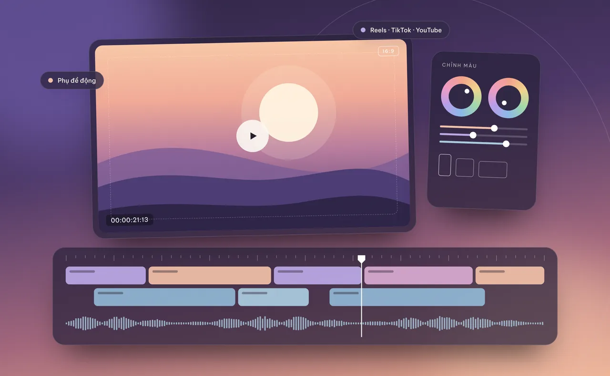

Edit video · Thủy sản & nông nghiệp
Dựng video hướng dẫn kỹ thuật nuôi tôm và giới thiệu sản phẩm thủy sản
Người nuôi tôm, nuôi cá tin vào điều họ tận mắt thấy ở ao, không tin lời quảng cáo chung chung. Dream Labs dựng footage kỹ thuật viên tại ao, sản phẩm và nhà máy của bạn thành video hướng dẫn dễ hiểu, giúp đại lý bán hàng và người nuôi dùng sản phẩm đúng cách.
- Giá từ800.000đ
- Thời gian từ2 ngày
- Số gói3 gói

Ở vùng nuôi, kỹ thuật viên là người được tin nhất. Họ xuống ao, đo nước, xem đường ruột con tôm, chỉ cho người nuôi cách xử lý khi tảo tàn hay nước đục. Nhưng một kỹ thuật viên chỉ đi được vài ao mỗi ngày. Video giúp kinh nghiệm đó tới được hàng nghìn người nuôi và đại lý cùng lúc. Dựng video hướng dẫn kỹ thuật nuôi tôm, nuôi cá và video giới thiệu sản phẩm là cách doanh nghiệp thủy sản xây niềm tin bền với bà con trước mỗi mùa vụ.
Dream Labs dựng từ footage bạn quay tại ao, tại trại giống, nhà máy hay hội thảo đầu bờ. Phần quay phim chuyên nghiệp tại vùng nuôi được báo giá riêng theo địa điểm và số ngày quay.
Doanh nghiệp thủy sản đang gặp khó gì
- Footage tại ao nhiều nhưng không dùng được. Gió lớn át tiếng nói, nắng gắt làm mặt nước chói, clip quay dọc quay ngang lẫn lộn.
- Kỹ thuật nói đúng nhưng khó hiểu. Nhiều thuật ngữ, nói nhanh, không có chữ minh họa. Người nuôi lớn tuổi xem xong vẫn không biết liều dùng bao nhiêu, đánh lúc mấy giờ.
- Đại lý không có công cụ tư vấn. Đại lý thuốc thú y thủy sản phải giải thích từng sản phẩm bằng lời, mỗi người nói một kiểu.
- Hội thảo tốn kém nhưng chỉ một lần. Buổi hội thảo đầu bờ được quay lại nhưng không ai dựng, người không đến dự không được nghe.
- Hình ảnh nhà máy, vùng nuôi chưa được kể. Đối tác thu mua, nhà nhập khẩu muốn thấy quy trình nhưng doanh nghiệp chỉ có ảnh chụp rời rạc.
Dream Labs dựng gì cho thủy sản và nông nghiệp
Video hướng dẫn kỹ thuật theo giai đoạn nuôi
Cải tạo ao, gây màu nước, thả giống, quản lý môi trường, chăm sóc theo tuần tuổi, thu hoạch. Mỗi video một chủ đề, chữ chú thích từng bước, nhấn rõ thời điểm và liều lượng theo nội dung kỹ thuật bạn cung cấp. Làm rõ tiếng nói, giảm tiếng gió và tiếng máy quạt nước.
Video giới thiệu sản phẩm
Men vi sinh, khoáng, chế phẩm xử lý nước, thức ăn. Video ngắn cho từng sản phẩm: dùng khi nào, pha thế nào, đánh lúc nào, lưu ý gì. Đại lý gửi qua Zalo cho người nuôi, ai cũng nhận được cùng một hướng dẫn chuẩn.
Video tại ao của kỹ thuật viên
Kỹ thuật viên kiểm tra ao thực tế, giải thích dấu hiệu nhận biết và cách xử lý. Dream Labs cắt gọn, thêm phụ đề, chèn chữ nhấn các chỉ số quan trọng, giữ nguyên giọng nói gần gũi của người trong nghề.
Video hội thảo và video doanh nghiệp
Cắt hội thảo đầu bờ thành nhiều video ngắn theo từng câu hỏi của bà con. Video giới thiệu nhà máy, vùng nuôi, quy trình kiểm soát chất lượng cho đối tác thu mua và nhà nhập khẩu; nếu cần phụ đề tiếng Anh, bạn cung cấp bản dịch hoặc trao đổi để báo giá riêng trước khi làm.
Doanh nghiệp được gì
- Người nuôi dùng sản phẩm đúng cách. Dùng đúng thì dễ thấy hiệu quả, người nuôi quay lại mua ở vụ sau.
- Đại lý bán hàng dễ hơn. Có sẵn video chuẩn để gửi khách, đại lý tư vấn nhất quán và tự tin hơn.
- Kỹ thuật viên đỡ phải nói lại. Câu hỏi lặp lại mỗi mùa vụ đã có video trả lời.
- Thương hiệu gắn với sự hiểu nghề. Kênh có kiến thức hữu ích được người nuôi theo dõi, chia sẻ trong các nhóm, không chỉ là kênh quảng cáo.
- Hồ sơ năng lực bằng video cho đối tác. Nhà nhập khẩu thấy quy trình thật, rút ngắn thời gian tìm hiểu.
Thử tính: mỗi mùa vụ kỹ thuật viên của bạn trả lời cùng một câu hỏi bao nhiêu lần? Một hội thảo đầu bờ tốn bao nhiêu chi phí mà chỉ phục vụ những người có mặt hôm đó?
Cấu trúc một video hướng dẫn kỹ thuật 2–3 phút
- Mở đầu bằng vấn đề. Cảnh ao nước có dấu hiệu bất thường, chữ ghi rõ tình huống người nuôi hay gặp.
- Nguyên nhân. Kỹ thuật viên giải thích ngắn gọn, có chữ chú thích thuật ngữ.
- Cách xử lý từng bước. Mỗi bước một cảnh: đo, pha, tạt, theo dõi. Thời điểm và lượng dùng hiện rõ trên màn hình.
- Lưu ý và liên hệ. Những điều cần tránh, kết bằng số điện thoại kỹ thuật hoặc đại lý gần nhất.
Bảng giá dựng video thủy sản
Một người nuôi trung thành mua hàng nhiều vụ, nhiều năm. Video hướng dẫn đúng kỹ thuật dùng được cho cả hệ thống đại lý, tốn chi phí một lần nhưng phục vụ suốt nhiều mùa vụ.
Gói Cơ bản
800.000đ/video
2 ngày · 4 vòng sửa
Doanh nghiệp được gìVideo gọn gàng, có phụ đề để đăng đều đặn mà không mất thời gian tự dựng.
- Video ngắn ≤ 60 giây
- Cắt ghép, nhạc nền, phụ đề
- Chỉnh màu cơ bản
- Không gồm: Motion text & hiệu ứng
Gói Chuyên nghiệp
Phổ biến nhất2.000.000đ/video
3–4 ngày · 9 vòng sửa
Doanh nghiệp được gìVideo giữ người xem tới cuối, dựng một lần dùng được cho TikTok, Reels và YouTube.
- Video ≤ 3 phút
- Phụ đề động, motion text
- Color grading điện ảnh
- Xuất 3 tỷ lệ 9:16, 1:1, 16:9
Gói Cao cấp
5.000.000đ/video
5–7 ngày · 18 vòng sửa
Doanh nghiệp được gìVideo quảng cáo chỉn chu kèm 5 clip ngắn: đủ nội dung cho cả một chiến dịch.
- Video ≤ 10 phút hoặc TVC
- Kịch bản dựng + sound design
- VFX, chèn đồ họa 3D
- Bộ 5 clip cắt ngắn đi kèm
Giá chưa gồm VAT. Báo giá cuối cùng theo phạm vi thống nhất trước khi làm, không phát sinh ngoài phạm vi.
Video ngắn giới thiệu từng sản phẩm cho đại lý chọn gói Cơ bản, 800.000đ/video. Video hướng dẫn kỹ thuật 2–3 phút có chữ chú thích từng bước chọn gói Chuyên nghiệp, 2.000.000đ/video. Video doanh nghiệp, video hội thảo dài đến 10 phút có kịch bản dựng chọn gói Cao cấp, 5.000.000đ/video, kèm 5 clip ngắn. Xem chi tiết ở bảng giá.
Nội dung về thuốc thú y thủy sản, chế phẩm sinh học, thức ăn phải đúng với hồ sơ đăng ký lưu hành và quy định hiện hành. Liều lượng, công dụng do doanh nghiệp cung cấp và chịu trách nhiệm; Dream Labs không viết cam kết năng suất hay tỷ lệ sống.
Câu hỏi thường gặp
Quay ngoài ao gió lớn thì tiếng có cứu được không?
Giảm được tiếng gió và tiếng máy quạt nước ở mức nhất định. Tốt nhất là dùng micro cài áo có lông chắn gió, đứng quay lưng về hướng gió khi nói.
Người nuôi lớn tuổi có xem được video không?
Có, nếu video dùng chữ to, câu ngắn, nói chậm và đúng tiếng địa phương. Dream Labs giữ giọng nói tự nhiên của kỹ thuật viên, chỉ cắt bỏ đoạn thừa và thêm chữ ở chỗ quan trọng.
Có làm hoạt hình minh họa vòng đời con tôm, cơ chế men vi sinh không?
Phần minh họa bằng đồ họa thuộc dịch vụ video motion graphic cho thủy sản, có thể ghép vào video quay thật.
Video có dùng cho nhóm Zalo đại lý được không?
Được. Video được xuất dung lượng phù hợp để gửi qua Zalo mà vẫn nét. Bản dọc dùng cho Zalo, TikTok; bản ngang dùng cho YouTube và hội thảo.
Dream Labs làm thêm cho ngành thủy sản: thiết kế bao bì sản phẩm thủy sản, website doanh nghiệp thủy sản, landing page sản phẩm và tự động hóa quản lý đại lý. Về trang dịch vụ edit video.
Bắt đầu cùng Dream Labs
Biến kinh nghiệm kỹ thuật viên thành video cho cả mùa vụ
Gửi cho Dream Labs footage tại ao, danh sách sản phẩm và nội dung kỹ thuật muốn truyền tải. Bạn nhận hướng dựng và báo giá trong 24 giờ.